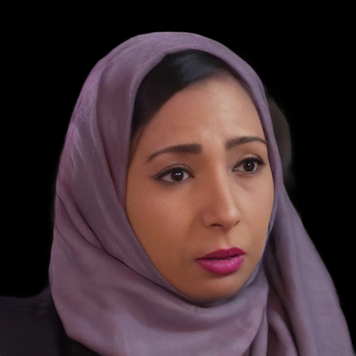
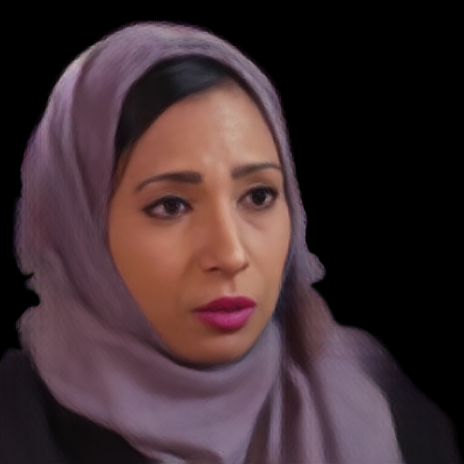

ONE IMAGE. DEFORMABLE GEOMETRY. ALIGNED APPEARANCE.
HSAVATAROne-shot Animatable Gaussian Avatars
via an Adaptive Hybrid Shape Model
and UVH-guided Appearance Modeling
1 Peking University 2 Pengcheng Laboratory
* Equal contribution
Recover geometry first. Align image evidence to it.
Build a canonical avatar once and reuse it across target frames.
Abstract
Reconstructing an animatable Gaussian avatar from a single portrait is challenging because the observed image provides incomplete evidence for both 3D geometry and appearance. In particular, facial templates cannot adequately represent hair and shoulder regions, while image features projected to 3D may suffer from ambiguous correspondence and occlusion. We propose HSAvatar, a two stage framework that first establishes a personalized and deformable geometric scaffold, and then predicts Gaussian appearance on this structure. In Stage I, a Hybrid Shape Model (HSM) combines a FLAME based head with an adaptive shoulder and neck carrier. Layered normal offsets extend the geometric support, while region specific deformation correspondence enables consistent animation. In Stage II, the learned shape is organized with UVH coordinates and serves as the reference for appearance modeling. Global identity features, local high frequency features, multi scale texture features, and a projection derived physical clue are integrated through multi-clue fusion. A UVH based Gaussian attribute decoder then predicts the canonical Gaussian attributes. Experiments demonstrate HSAvatar achieves competitive reconstruction quality, accurate motion transfer, and real time animation on public benchmark.
METHOD
Hybrid geometry.
UVH-guided appearance.
A personalized head–shoulder scaffold
with multi-clue appearance fusion.

Overview of HSAvatar. HSM establishes personalized head–shoulder geometry with explicit deformation correspondence. UVH-guided multi-clue fusion predicts canonical Gaussian appearance; target expressions and poses animate the avatar through region-specific LBS and rendering.
01 / COMPARISONS
Video comparisons
Matched source and driving frames.
Play the sequence, then inspect selected moments.
A continuous frame sequence with a shared source portrait and matched driving frames, displayed at 25 fps. Keyframes provide closer views and reference-based error maps.
Video comparison setup
Identity 020000, source frame 0, consecutive frames 0–99. ROME uses its official inference and predicted foreground mask; its native 256 × 256 result is resized to 512 × 512. HSAvatar includes final refinement and alpha composition. Both are displayed on black. Error maps use reference-foreground pixels and the same scale.
More identities and methods


Source 020043 · Frame 0 · Target frame 35
View comparison with all methods ↗
Experimental setup
Each avatar uses source frame 0. Self-reenactment uses a target frame of the same identity as the driving reference and ground truth. Cross-reenactment transfers motion from a different identity.
Comparisons use the same source and driving frames across methods. Images retain each method's native preprocessing and use MODNet foreground compositing for display.
02 / INTERACTIVE CONTROL
Interactive Rendering
Control FLAME expressions and pose,
explore viewpoints, and play driving motions.
Adjust head, neck, jaw, eyes and expression coefficients; switch between Gaussian rendering and the FLAME mesh; record keyframes and load driving motions. Live controls connect to a running renderer.
Rendering speed
Measured on one NVIDIA RTX 4090 at 512 × 512, batch size 1, FP32. 1,440 timed renders across English and Chinese motion sequences, with 30 warm-up frames per clip and three rounds. Mean 9.65 ms/frame; P95 9.71 ms. Includes target deformation, Gaussian rendering, NAFNet refinement and alpha composition. Source initialization (46.10 ms, warm mean) and ARTalk audio-to-motion are measured separately; I/O and video encoding are excluded.
03 / AUDIO-DRIVEN ANIMATION
Let the portrait speak.
Audio → ARTalk motion → HSAvatar
ARTalk predicts expression and head motion from speech. HSAvatar animates the same source identity using the predicted FLAME parameters. Enable sound to hear the driving audio.